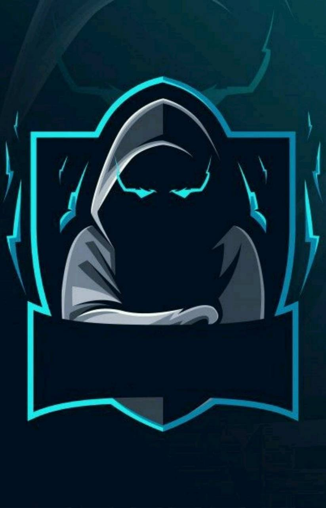

a python programmer
Myself J.Adrin Rithik from Kanyakumari,Tamilnadu,India.This is my First Website I have created using Antigravity. I have a little knowledge in python and html.I love eating foods and playing games. I am a big fan of anime and I love to watch anime.My Frist Anime is Naruto and my favorite anime is Dragon ball Super.Now a day I am doing coding because its make me more fun.My favorite programming language is python.I have done more but small python projects.One day I will do a big project using python and that project should be useful for many peoples.
Design focuses on layout, colors, typography, and user experience to make the site attractive and easy to use. Development involves coding and programming to ensure the website works properly across devices and browsers. Together, they help businesses and individuals present information, services, or products effectively online. A well-designed and developed website improves user engagement, accessibility, and overall performance.

I like to play Free Fire, and in my gang I’m known as the destroyer because I rush enemies without fear and lead my team to victory; ever since the early days of the game, when everyone landed with basic gear and fought hard to survive, Free Fire has been my favorite battleground to prove my skills.If you want to challenge me in Free Fire then send me a mail
Challenge Me! 🎮